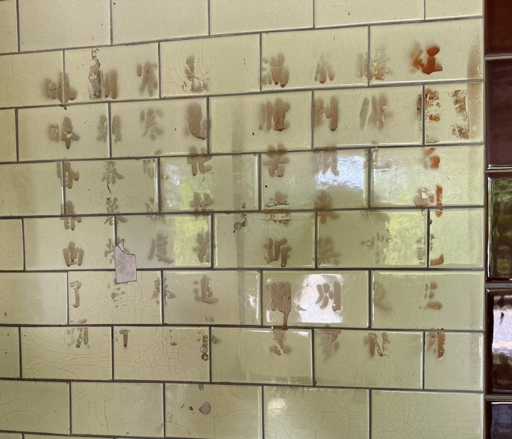
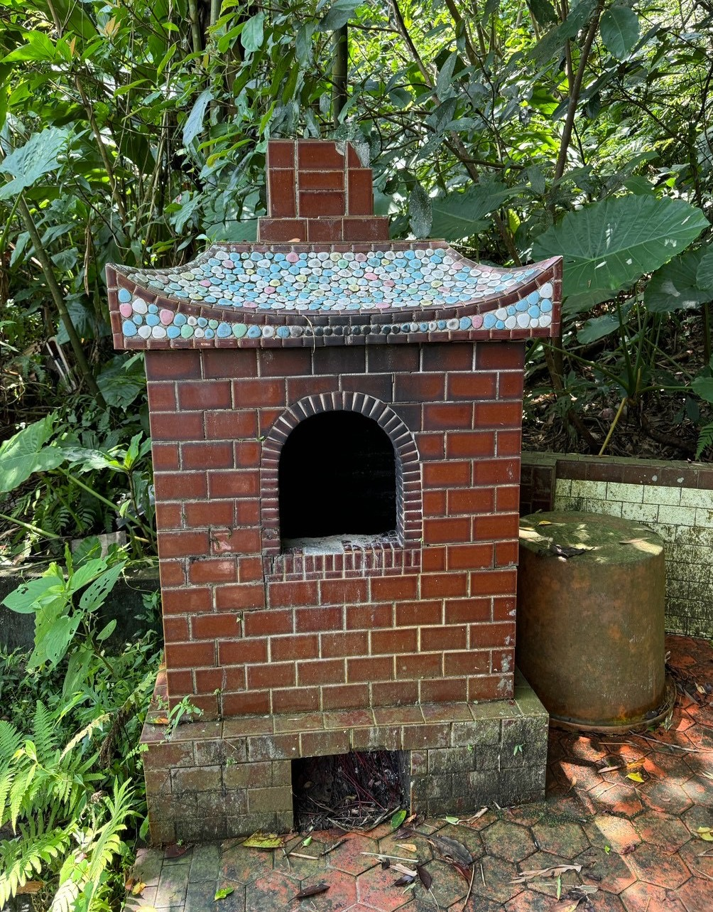

<!DOCTYPE html>
<html lang="zh-Hant">

<head>
    <meta charset="utf-8">

    <title>萬善堂 360° 全景</title>

    <link rel="stylesheet"
          href="./pannellum/pannellum.css">

    <script src="./pannellum/pannellum.js"></script>

    <style>
        html, body{
            margin: 0;
            padding: 0;
            overflow: hidden;
        }
        #panorama {
            width: 100%;
            height: 100vh;
        } 

    </style>
</head>

<body>

<div id="panorama"></div>

<script>

pannellum.viewer('panorama', {
    "default": {
        "firstScene": "scene1",
        "autoLoad": true,
        "author": "Yen-Yu Chen"
    },

    "scenes":{
        "scene1": {
            "type": "equirectangular",
            "panorama": "./content/photo/wanshantang/20260814_1100_wanshantang_05_appearance.JPG",
            "title": "萬善堂外觀",
            "pitch": -3,
            "yaw": 168,
            "hfov": 110,
            "compass": true,
            "northOffset": 80,
            "hotSpots": [
                {
                    "pitch": 10,
                    "yaw": 120,
                    "type": "info",
                    "text": `
                        <div style="text-align: center;">
                            <br/>
                            <strong>牆上紅字</strong><br/>
                            第一段出自淨土宗法語中的《無常法語》：「紅塵名利色三關，賺得凡夫日夜忙，累到頭來無別事，滿腔苦訴閻王」。
                            第二段出自羅洪先的《醒世詩》：「急急忙忙苦追求，寒寒暖暖度春秋，朝朝暮暮營家計，皞皞昏昏白了頭」。
                        </div>
                    `
                },
                {
                    "pitch": -10,
                    "yaw": 40,
                    "type": "info",
                    "text": `
                        <div style="text-align: center;">
                            <br/>
                            <strong>用於燒金紙的爐子</strong><br/>
                        </div>
                    `
                }
            ]
        }
    }
});


</script>

</body>
</html>